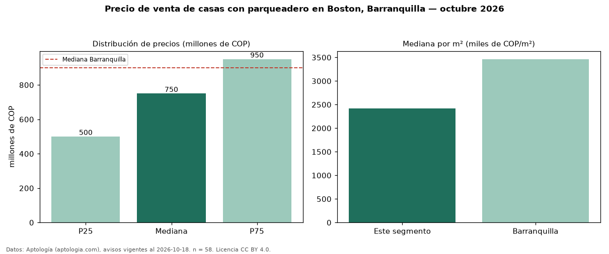

Precio de venta de casas con parqueadero en Boston, Barranquilla — octubre 2026
Con 58 avisos vigentes, el precio mediano de casas con parqueadero en venta en Boston, Barranquilla es COP 750 millones. Eso es 7 % más que la mediana de todas las casas en venta de Boston (COP 700 millones, n = 79); este segmento reúne el 73 % de esos avisos. Por metro cuadrado, la mediana es COP 2,42 millones/m² (n = 58), 1 % por encima del conjunto de referencia (COP 2,40 millones/m²). El área mediana anunciada es 280 m². El segmento con más oferta es el de 3 o más habitaciones (56 avisos, mediana COP 750 millones). La mitad central de los avisos va de COP 500 millones a COP 950 millones (razón 1,9), una dispersión moderada. El estrato más frecuente es 4 (72 % de los avisos con estrato). La mediana de todas las casas en venta de Barranquilla es COP 900 millones (−17 % de diferencia). Datos: Aptología (aptologia.com), CC BY 4.0 — https://www.aptologia.com/casas-en-venta/barranquilla/boston. Archivos: PDF, CSV con las cifras y gráfica PNG.

| Avisos únicos | 58 |
|---|---|
| Percentil 25 | COP 500.000.000 |
| Mediana | COP 750.000.000 |
| Percentil 75 | COP 950.000.000 |
| Mediana por m² | COP 2.422.143 |
Fuente: avisos vigentes de portales inmobiliarios recopilados por Aptología, deduplicados (mínimo 30 avisos únicos por celda). Precios pedidos, no cerrados. Fecha: 2026-10-18.